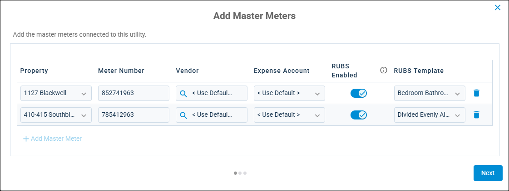

Source: https://rmxhelp.rentmanager.com/Topics/Express/Action/MU-Master-Meter-Add.htm
Add Master Meters
Master meters record utility usage for an entire property (e.g., the water meter for an apartment building). This allows you to store and manage the meter data for the property and accurately track of total property utility usage and costs. You can also create master meter bills tied to each master meter and billing period to properly record your property-wide consumption and expenses in Rent Manager.
More Information
Adding a master meter to a source utility (such as water) automatically adds the same master meter to any linked sub-utility (such as sewer). The sub-utility's expense account can differ from the source utility, but all other updates must be made to the master meter on the source utility and changes appear on both. For more information, refer to Utility Details (Page).
Related Privileges
| Group | Privilege | Column |
|---|---|---|
| Utilities | Metered utilities | Enabled |
| Utility information | View, Edit |
For more information, refer to Control User Access.
To add a new master meter, do the following:
-
Go to
 arrow_forward Services arrow_forward Metered Utilities arrow_forward Utilities and select a utility.
arrow_forward Services arrow_forward Metered Utilities arrow_forward Utilities and select a utility.
The utility's details page displays. -
In the Master Meters tile, click Add Master Meters. If at least one master meter already exists for this utility, in the tile header, click Add Master Meter instead.

-
At the top, enter information into the available fields described below. These fields display only if no master meters were created for the utility yet.
Field Description Default Expense Account
The default vendor expense account to use on the master meter bills created for properties assigned to this utility.
The expense account can be overridden for individual property master meters as needed.
Default Vendor
The default vendor account to assign to the master meter bills created for properties assigned to this utility.
The vendor can be overridden for individual property master meters as needed.
-
In the grid below, enter information into the available columns.
Column Description Property
The property for which the master meter tracks consumption.
Meter Number
The unique meter number for this master meter. This may be a serial number or other identification number.
Vendor
The vendor account to assign to the master meter bills created for this property and the associated source utility and sub-utilities. To assign the vendor listed under the Default Vendor field to this master meter, select <Use Default>.
Expense Account
The expense account to use on the master meter bills created for this property and the associated utility. To assign the default vendor expense account listed under the Default Expense Account field to this master meter, select <Use Default> .
RUBS Enabled
If toggled, a ratio utility billing system (RUBS) template is used to calculate the utility bill for each tenant at the property based on the master meter bill.
RUBS Template
The RUBS template used to calculate the utility bill for each tenant at the property based on the master meter bill. This column is available only if RUBS Enabled is toggled and at least one RUBS template is created.
-
To add additional master meters, click
 Add Master Meter and add that master meter's information.
Add Master Meter and add that master meter's information. -
Click Finish.
The master meter is added to the source utility.